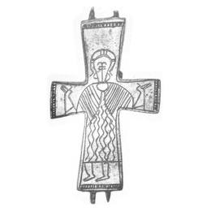

Catalog › CE-0019 · LOV1999-13
Valvă posterioară de encolpion cu figură orantă gravată
sec. VII–XI (601–1100) · Orosháza, Békés (Kom.), Ungaria · Muzeul Național Maghiar, Budapesta, inv. 1893.75.1348
single valve of a reliquary cross, bronz; c. VII–XI (601–1100); found at Orosháza, Békés (Kom.), Ungaria; kept at Muzeul Național Maghiar, Budapesta.


Identificare
- Categorie
- Valvă izolată
- Material
- Bronz
- Tehnică
- Turnare în relief; Gravare (incizie)
- Dimensiuni
- Î 79 × L 45 mm
Iconografie
- Revers
- Neidentificat
- Descriere revers
- Figură orantă gravată, cu nimb cruciform; hainele coboară până la jumătatea gambei, redate prin linii oblice paralele pe umăr și linii ondulate verticale în mijloc. Chenar de linii; la capetele brațelor, câte o bandă crestată.
Datare și atribuire
- Datare
- sec. VII–XI (601–1100)
- Centru
- Siria–Palestina
Descoperire
- Localitate
- Orosháza
- Regiune
- Békés (Kom.)
- Țară
- Ungaria
- Context
- Colecție (fără context)
- Coordonate
- 46.5583° N, 20.6720° E
- Precizia locului
- Doar localitatea
Păstrare și referințe
- Colecție
- Muzeul Național Maghiar, Budapesta
- Nr. inventar
- 1893.75.1348
- Bibliografie
- Zs. Lovag, Mittelalterliche Bronzegegenstände des Ungarischen Nationalmuseums (Catalogi Musei Nationalis Hungarici, Series Archaeologica III), Budapest, 1999, p. 25, cat. nr. 13, reprodusă la Abb. 13 (planșele, p. 131). Bibliografie citată în sursă: Hampel 1893, 448–49; Bárány-Oberschall 1953, 218, Abb. 67.4; Kovalovszki 1965, 46, Tafel I; Lovag 1971, 150, Fig. 3/1; Lovag 1979, 47, Abb. 1.b; Lovag 1982, 160, Abb. 3; Szatmári 1995, 239–40, Abb. 7.1.
- Figura
- Abb. 13
- Planșe
- Lovag 1999, planșele, p. 131
- Observații
- Datare după Lovag: sec. VII–XI. VII–XI. Cumpărată de la colecționarul László Pokorny, împreună cu alte obiecte din comitat. Coordonate: ale localității (aproximative), nu date în sursă.
Citare: Corpus Encolpiorum, CE-0019, Valvă posterioară de encolpion cu figură orantă gravată, --root/piese/LOV1999-13/ (accesat 2026-10-20).